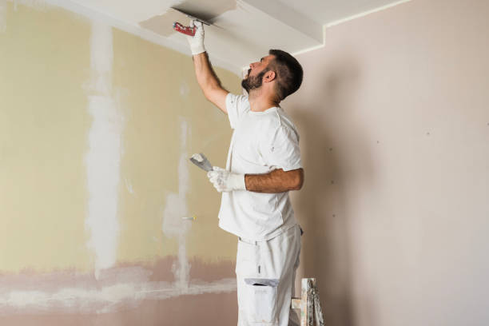
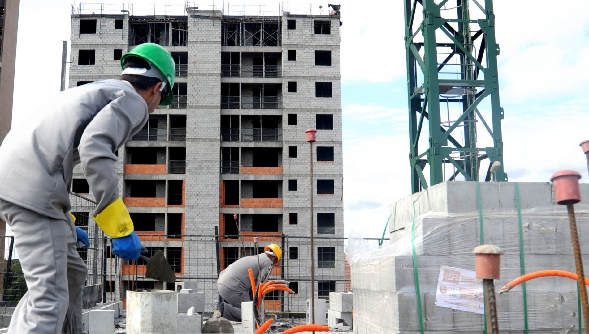

Descubra a Revolução na Gestão de Obras com a Nossa Empresa!
Na vanguarda da inovação na construção civil, estamos aqui para transformar a maneira como você gerencia suas obras. Com uma visão centrada na eficiência e na excelência, nossa empresa oferece uma solução completa para informatizar e simplificar a administração de seus projetos.
|

Realizamos serviços de reforma em residências e edifícios comerciais, garantindo qualidade e eficiência em cada etapa do processo. |

Oferecemos serviços de manutenção predial para garantir a segurança e funcionalidade de sua propriedade, com equipe especializada e materiais de qualidade. |
Construímos residências, prédios comerciais e industriais, utilizando as mais avançadas técnicas construtivas e materiais de alta qualidade para garantir a durabilidade e a segurança das estruturas. |
|---|